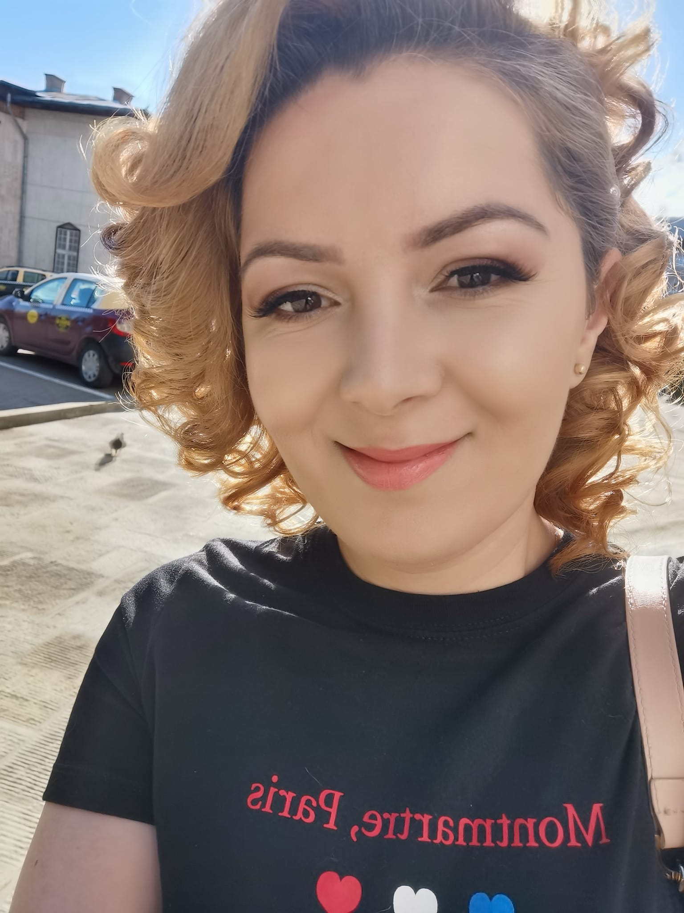

Sunt pasionată de învățare și dezvoltare personală. În prezent, particip la un curs de programare, unde descopăr noi abilități și mă perfecționez în acest domeniu fascinant. Sunt antreprenor și gestionez cu succes un magazin online impreuna cu asociatul meu, ceea ce îmi permite să îmbin pasiunea pentru business cu dorința de a crea soluții inovatoare.
Pe lângă cariera mea profesională, îmi place să mă mențin activă și să explorez noi experiențe. Merg regulat la sală, ador să călătoresc, să citesc cărți diverse și să fac plimbări relaxante. Sunt o persoană ambițioasă și curioasă, mereu dornică să învăț lucruri noi și să-mi extind orizonturile. Această dorință de a progresa mă motivează în tot ceea ce fac, fie că este vorba de dezvoltarea personală, fie de carieră.
Sportul aduce beneficii semnificative pentru sănătatea fizică și mentală a oamenilor. Prin mișcare regulată, contribuie la menținerea unei greutăți optime, întărirea mușchilor și îmbunătățirea sistemului cardiovascular, reducând totodată riscul unor boli cronice. Pe lângă efectele fizice, sportul stimulează producerea endorfinelor, care ajută la reducerea stresului și la îmbunătățirea stării de spirit, crește încrederea în sine și dezvoltă disciplina, contribuind astfel la un echilibru general între corp și minte.
Călătoritul și explorarea de locuri noi sunt esențiale pentru sănătatea psihică, oferind oamenilor oportunitatea de a se deconecta de la rutina zilnică și de a se expune la experiențe noi și stimulante. Vizitarea unor destinații necunoscute stimulează curiozitatea, reduce stresul și anxietatea și poate îmbunătăți starea generală de bine.
Cititul stimulează gândirea critică, imaginația și creativitatea, contribuind la dezvoltarea unei viziuni mai ample asupra vieții. În plus, ne ajută să ne relaxăm și să ne deconectăm, fiind un mijloc eficient de a reduce stresul și de a ne menține sănătatea mentală într-o stare optimă.
Book 1